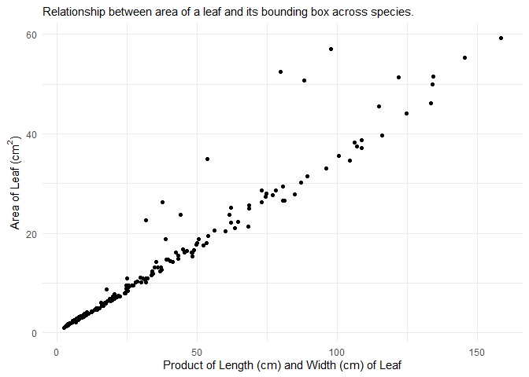
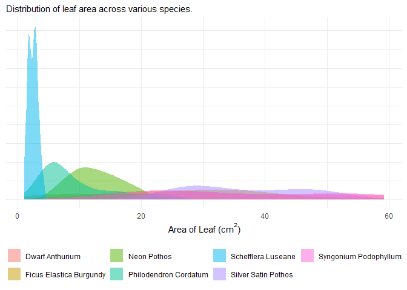
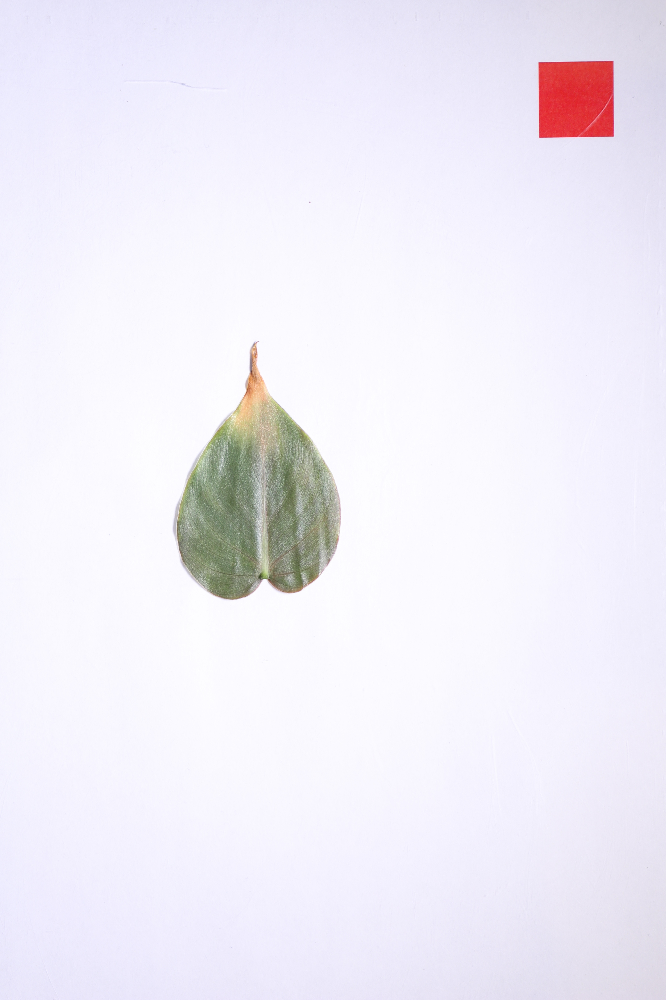
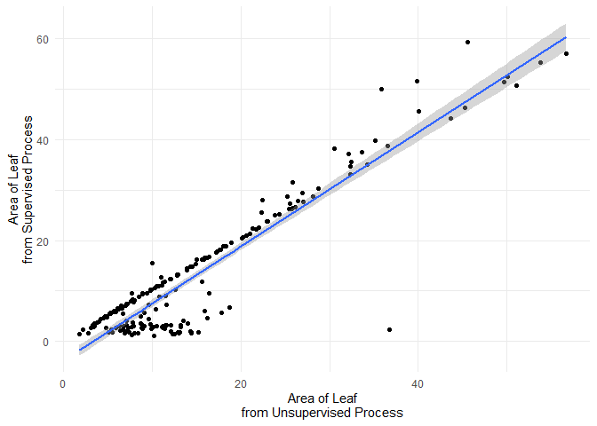

The goal of rhleaves is to provide a dataset that can be used to illustrate data exploration and analysis in a variety of courses.


Installation
You can install the development version of rhleaves like so:
# install.packages("remotes")
remotes::install_github("reyesem/rhleaves")About the Data
Data are the result of a study designed by students in a Biostatistics course at Rose-Hulman Institute of Technology to characterize the plants growing on two “living walls” installed on campus.
The primary dataset in the rhleaves package is the rhleaves dataset.
head(rhleaves)
#> # A tibble: 6 × 14
#> Wall Location Species `Stem Diameter` Mass Length Width `Image Name`
#> <chr> <chr> <chr> <dbl> <dbl> <dbl> <dbl> <chr>
#> 1 Moench Upper Left Philodendro… 1.6 0.39 6.3 4.3 IMG001
#> 2 Moench Upper Left Philodendro… 1.3 0.27 5.3 3.5 IMG002
#> 3 Moench Upper Left Philodendro… 1.8 0.3 5.4 3.5 IMG003
#> 4 Moench Upper Left Ficus Elast… 3.9 3.51 12.1 7.2 IMG004
#> 5 Moench Upper Left Ficus Elast… 3.2 1.69 9 4.7 IMG005
#> 6 Moench Upper Left Ficus Elast… 4.2 3.16 13.6 8 IMG006
#> # ℹ 6 more variables: `Supervised Length` <dbl>, `Supervised Width` <dbl>,
#> # `Supervised Area` <dbl>, `Unsupervised Length` <dbl>,
#> # `Unsupervised Width` <dbl>, `Unsupervised Area` <dbl>The rhleaves dataset contains measurements taken on individual leaves from seven species. In addition to these measurements, a photograph of each leaf was taken. Below is the image of the first leaf in the dataset.

The photos are stored in a zipped folder and accompany the package. There are three versions of photos:
-
original-images.zipcontains the original photos taken of each leaf. -
oriented-images.zipcontains the original photos, but each has been oriented in the same direction with a calibration square in the upper-right corner of the photo. -
extracted-images.zipcontains a version of the photo with the leaf extracted using photo software; that is, the background of the image has been removed.
The following code would unzip the “extracted images” to a folder called extracted-images in your current working directory.
system.file('extdata', 'extracted-images.zip', package = 'rhleaves') |>
unzip(exdir = 'extracted-images')These images might be used to illustrate extracting data from images or as data for training a machine learning algorithm. The images are presented in the same order as the observations in the rhleaves dataset.
A full description of the data can be found in the Description of Data Collection article on this site.
Example
The rhleaves dataset is meant to useful in illustrating a wide range of statistical applications. For data management, we can compare various species:
library(rhleaves)
library(tidyverse)
rhleaves |>
group_by(Species) |>
summarise(
`Mean Leaf Area` = mean(`Supervised Area`),
.groups = 'drop'
)
#> # A tibble: 7 × 2
#> Species `Mean Leaf Area`
#> <chr> <dbl>
#> 1 Dwarf Anthurium 33.6
#> 2 Ficus Elastica Burgundy 26.4
#> 3 Neon Pothos 12.6
#> 4 Philodendron Cordatum 9.49
#> 5 Schefflera Luseane 2.46
#> 6 Silver Satin Pothos 36.9
#> 7 Syngonium Podophyllum 35.8Introductory courses could consider various linear regression models. For example, a model of the form
If we believe the “supervised area” to be the more accurate measure, this model might shed light on whether the algorithm implemented for determining the area from the original images should be calibrated.
lm(`Supervised Area` ~ 1 + `Unsupervised Area`, data = rhleaves) |>
summary()
#>
#> Call:
#> lm(formula = `Supervised Area` ~ 1 + `Unsupervised Area`, data = rhleaves)
#>
#> Residuals:
#> Min 1Q Median 3Q Max
#> -35.392 -2.141 1.782 2.950 13.224
#>
#> Coefficients:
#> Estimate Std. Error t value Pr(>|t|)
#> (Intercept) -3.75225 0.59786 -6.276 2.15e-09 ***
#> `Unsupervised Area` 1.12892 0.03247 34.768 < 2e-16 ***
#> ---
#> Signif. codes: 0 '***' 0.001 '**' 0.01 '*' 0.05 '.' 0.1 ' ' 1
#>
#> Residual standard error: 5 on 198 degrees of freedom
#> Multiple R-squared: 0.8593, Adjusted R-squared: 0.8585
#> F-statistic: 1209 on 1 and 198 DF, p-value: < 2.2e-16
ggplot(rhleaves) +
aes(x = `Unsupervised Area`,
y = `Supervised Area`) +
geom_point() +
geom_smooth(method = 'lm', formula = y ~ x) +
labs(
y = "Area of Leaf\nfrom Supervised Process",
x = "Area of Leaf\nfrom Unsupervised Process"
) +
theme_minimal()
A second course in statistics might consider a linear regression of the form
to predict the area of a leaf as a function of its length and width. Alternatively, if you are examining nonlinear models, this might be fit on the original scale with a model of the form
nlsform <- `Supervised Area` ~ g0 * (Length)^(g1) * (Width)^(g2)
nls(nlsform, data = rhleaves, start = c('g0' = 0.5, 'g1' = 0.9, 'g2' = 1)) |>
summary()
#>
#> Formula: `Supervised Area` ~ g0 * (Length)^(g1) * (Width)^(g2)
#>
#> Parameters:
#> Estimate Std. Error t value Pr(>|t|)
#> g0 0.53867 0.03307 16.29 < 2e-16 ***
#> g1 0.13084 0.03815 3.43 0.000736 ***
#> g2 1.86000 0.03931 47.31 < 2e-16 ***
#> ---
#> Signif. codes: 0 '***' 0.001 '**' 0.01 '*' 0.05 '.' 0.1 ' ' 1
#>
#> Residual standard error: 1.823 on 197 degrees of freedom
#>
#> Number of iterations to convergence: 6
#> Achieved convergence tolerance: 5.445e-06Of course, it is likely these relationships differ across each species and that might be incorporated as well.
The images could be used, alongside a package like imager, to illustrate extracting data from images or writing functions in a statistical computing course.
# install.packages("imager")
library(imager)
# Unzip images ----
system.file('extdata', 'extracted-images.zip', package = 'rhleaves') |>
unzip(exdir = 'extracted-images')
# Load images ----
leaf1 <- load.image('extracted-images/IMG_001.PNG')
# Plot image ----
plot(leaf1)
# Area of leaf (in pixels) ----
sum(leaf1 > 0)Citation
To cite the rhleaves package, please use
citation("rhleaves")
#> To cite package 'rhleaves' in publications use:
#>
#> Reyes E (2025). _rhleaves: Leaf attributes from plants at Rose-Hulman
#> Institute of Technology_. R package version 0.1.0,
#> <https://reyesem.github.io/rhleaves/>.
#>
#> A BibTeX entry for LaTeX users is
#>
#> @Manual{,
#> title = {rhleaves: Leaf attributes from plants at Rose-Hulman Institute of Technology},
#> author = {Eric Reyes},
#> year = {2025},
#> note = {R package version 0.1.0},
#> url = {https://reyesem.github.io/rhleaves/},
#> }